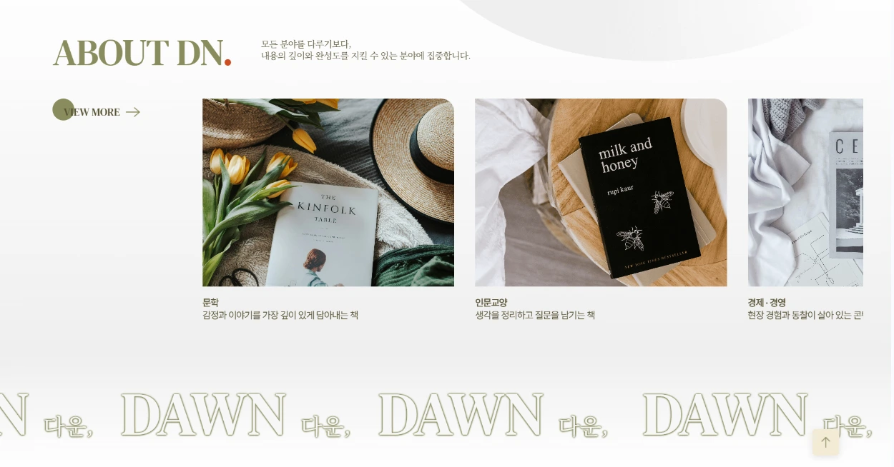
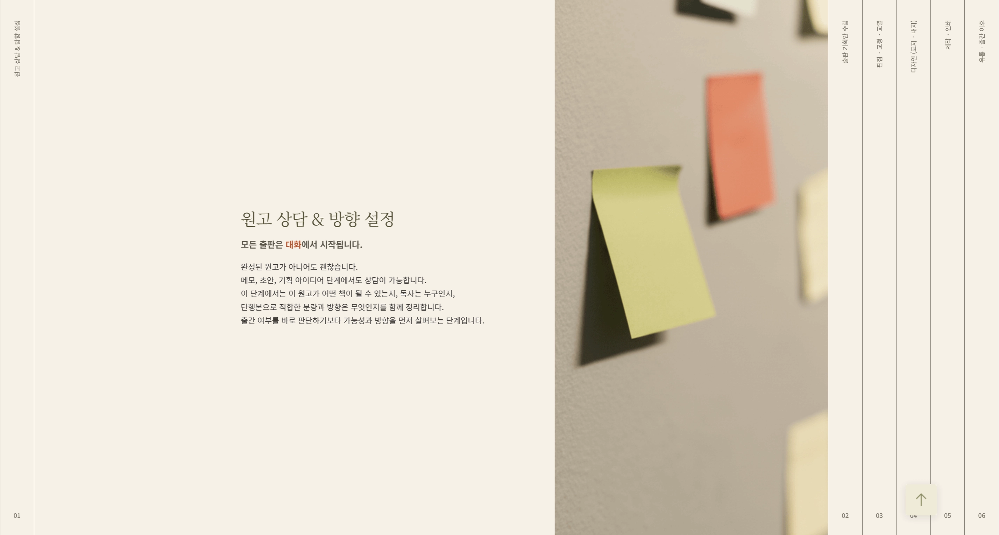
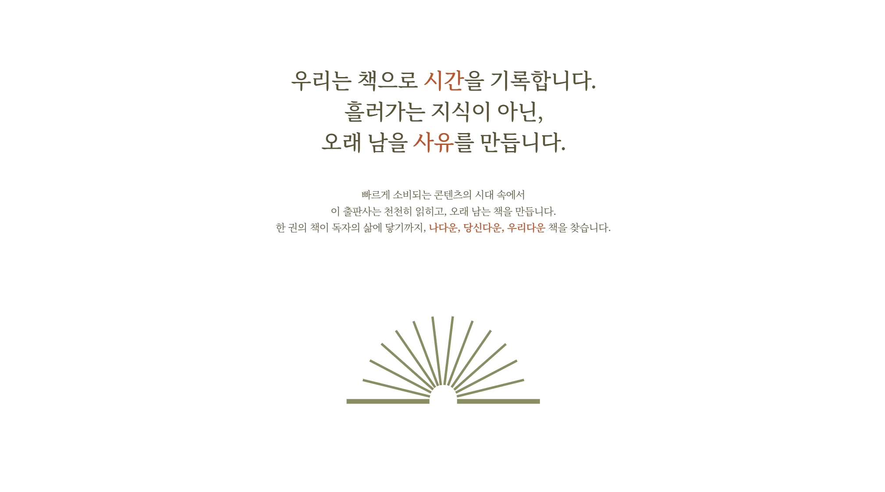
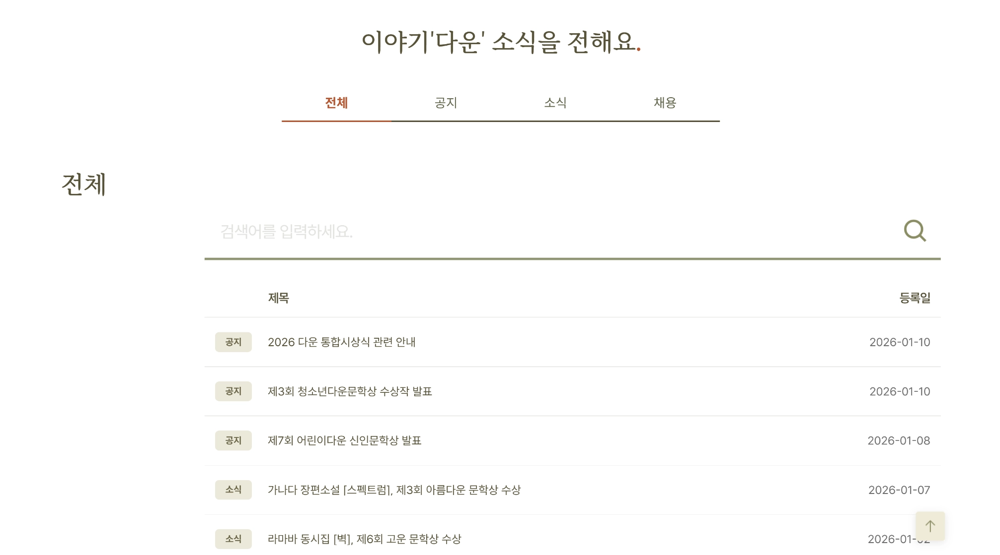
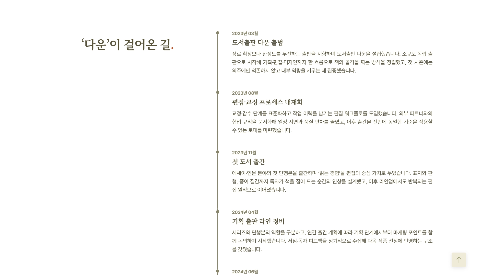
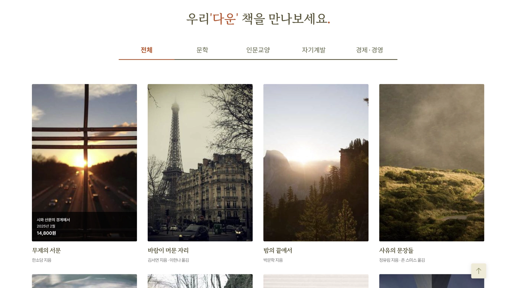

Work Detail
도서출판 다운 웹사이트
메인 랜딩에서 브랜드·출판 프로세스를 소개하고, about · now' dn · history · portfolio 서브 페이지로 철학·소식·연혁·도서 목록을 이어지는 출판사 브랜드 사이트입니다.
프로젝트 개요
가상의 출판사 도서출판 다운(DAWN)을 설정하고, “이야기를 책으로, 책을 오래 남는 가치로 만듭니다”라는 메시지를 중심에 둔 브랜드 웹입니다. 메인에서는 히어로 · about dn. · 출판 프로세스 · 포트폴리오 · 문의를 한 흐름으로 연결하고, 서브 페이지에서 철학·소식·연혁·도서를 각각 심화해 보여 줍니다.
기획 의도
출판사 사이트에서 요구되는 분야별 콘셉트(문학, 인문교양, 경제·경영, 자기계발 등)와 신뢰감을 먼저 쌓고, 이어서 단계별 제작 프로세스로 전문성을 보여 주도록 순서를 잡았습니다.
- 히어로 슬라이드로 브랜드 무드와 핵심 카피를 반복 노출
- “나다운 책” 소개와 분야 카드로 출판 방향성을 구체화
- 6단계 프로세스 서술 후 포트폴리오·문의로 자연스럽게 연결
- about·now' dn·history·portfolio 서브 페이지로 철학·소식·연혁·도서 탐색 분리
구현 방식
시맨틱한 섹션 구조 위에 Swiper로 히어로 페이드 슬라이드와 커스텀 진행 표시를 구현했고, 스크롤 연출에는 GSAP ScrollTrigger·ScrollSmoother를 사용했습니다. 인터랙션·모달·탭성 UI는 jQuery로 모듈화했습니다.
- 반복 카드·그리드·푸터 정보 블록을 재사용하기 쉬운 클래스 구조로 정리
- 이미지·로고에 대비와 의미가 드러나는 대체 텍스트 부여
- 상담 폼 라벨·포커스 흐름 등 기본 접근성 고려
사용 툴
시안·그래픽 작업과 코드 작성에 사용한 도구입니다.
작업물 미리보기
라이브 사이트 기준으로, 메인 랜딩과 메뉴의 서브 페이지 화면을 발췌했습니다.
메인


서브 페이지




회고
문학·출판 계열 사이트는 여백과 타이포 위계가 브랜드 인상을 좌우합니다. 장식보다 읽히는 문장과 섹션 간격을 맞추는 데 시간을 들였고, 스크롤 모션을 과하게 쓰지 않고 콘텐츠 전달을 우선했습니다. 이후 도서 이미지 자산만 교체해도 포트폴리오 섹션이 확장되도록 마크업을 단순하게 유지했습니다.